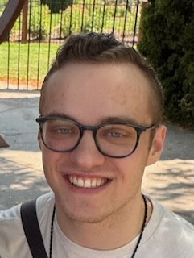

Hi, I'm Sam Jarzembowski! (he/him)
I'm a junior in CTD taking this class to learn more about accessible design.
I love to travel, cook, and bake. I'm interested in all things technology, especially UI/UX and web design!